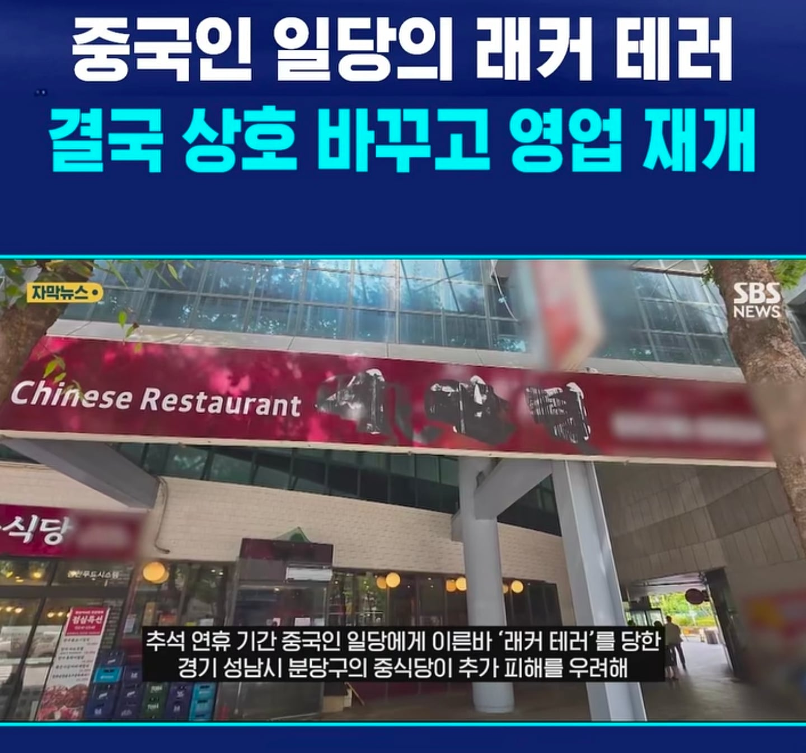
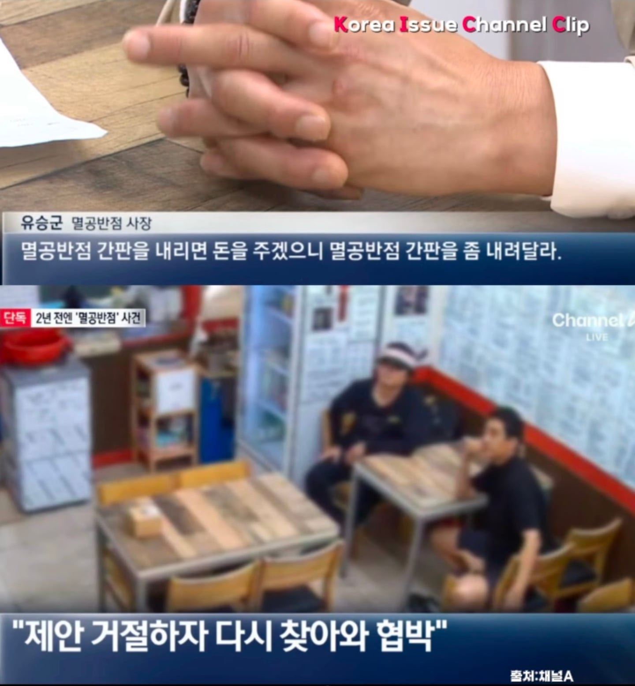
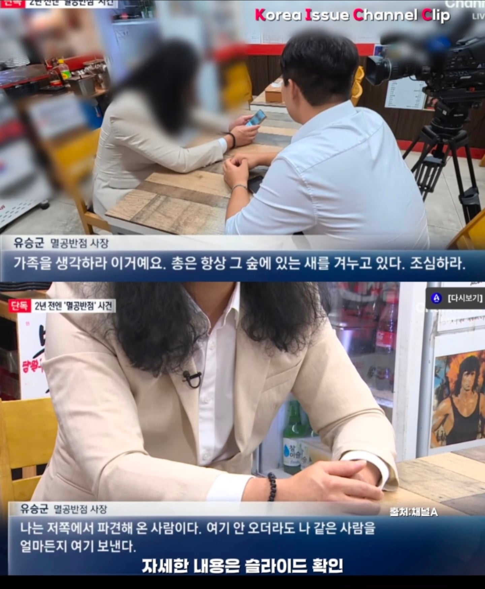

대한민국 내에서 대한민국 국민이 외국인한테 협박당하고 테러당하는 중



대한민국 내에서 대한민국 국민이 외국인한테 협박당하고 테러당하는 중
나는 진짜 멸공반점은 이름이 이해가가는데 시진핑 이름 가게 테러한거는 진짜 이해가안감
그릇이 보인다 ㅋㅋ
아니 진짜 보는거에 따라서 다른거아님? 위대하신 영도자 시진핑주석을 가게 이름으로 만들어서 주석님을 모욕하다니! 이거랑 국가주석 이름으로 만든 가게를 테러하다니! 두가지 시선으로 볼수잇는 사건인데 내가 중국사람이면 두번째로 받아들여서 오히려 더처벌하는게 맞지않음??중국인 몰이하고싶은 마음은 알겟지만 난 모든 중국이 갈갈이 찢겨서 더많이 생기는걸 좋아하는사람이라 중국인 몰이는 정사판가서해.
천안에서 출퇴근할때 천안문 보이던데 여기도 벌벌 떨고있겠는데? 천안도 외노자 개많아서 ㅋㅋ
병신나라다됨
처벌을 다음엔 잘하자 급으로 하니 만만하지
나같으면 마오쩌둥으로 바꿀듯